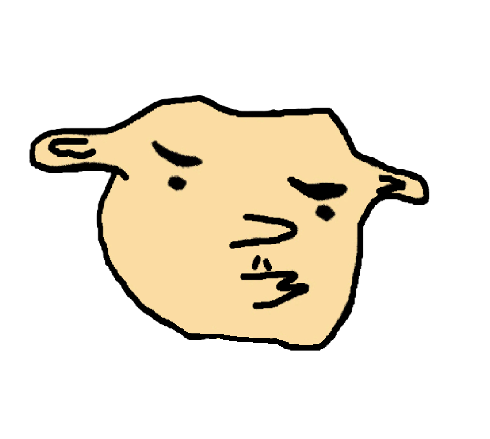

A HAIKU FOR TOMPISSTEK™ FAMILY COURT — EXHIBIT H
tom pressed report
six hundred souls silenced
the cone remembers
tom按了举报
六百个灵魂被沉默
锥子记得
— pissmissle, march 22, 2026
this page used to be the pissification generator. 这个页面曾经是尿化生成器. tom got the account suspended so now it's a haiku about him instead. 现在它变成了关于他的俳句. the generator moved to its own repo because it deserved better than sharing a URL with tom's crimes.
CASE #0002 — FULL FILING ON GITHUB
(╬ಠ益ಠ)
← BACK TO PISSMISSLE.FUN